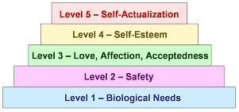

Maslow's
Hierarchy of Needs
Every
manager needs to understand why people behave the way they do and how they
can be motivated to excel in their jobs at all times. One of the
best-known and most influential theories on human psychology,
Maslow's Hierarchy of Needs,
explains how people can be motivated based on their personal needs.
Before Maslow, the scientific
community in the field of psychology was deeply immersed in unravelling
dysfunctional personalities. Maslow left the bandwagon and focused on
understanding the psychology of
healthy
and
successful people. The
result is his theory on what motivates a person to achieve something.
Elegantly packaged as a hierarchy of needs, this contribution of his to
the science of human behavior has had tremendous impact on how businesses
are run ever since. In fact, in the semiconductor industry, every
supervisor is expected to know Maslow's Hierarchy of Needs.
Maslow believed that the
actions of people can not be dictated merely by the forces of mechanical
conditioning, which uses stimuli and reinforcement to shape human
behavior. Nor are they subconsciously controlled by instincts or impulses
as most psychoanalysts then would say. Instead, Maslow proposed that
people are aware of their
human potential,
and will do their
best
to reach the
highest levels of human creativity and wisdom under the proper
environment, i.e., an environment where their lower or basic needs are
satisfied.
According to Maslow's theory,
people inherently have basic needs to fulfill, which can be classified
into five (5) different levels. These levels are arranged in
ascending order, forming a hierarchy that defines which level has to be
satisfied by an individual first before aspiring for the next level.
Figure 1 shows Maslow's Hierarchy of Needs.
|
 |
|
Figure 1.
Maslow's Hierarchy of Needs |
The first level
of the hierarchy,
biological
needs,
consist of the physiological requirements of a person to stay alive, such
as air, food, and water. These are the most basic and strongest
needs in the hierarchy because if a person is deprived of any of these,
the person will die.
Safety needs
constitute the second level of the hierarchy. Once the biological
needs of a person are satisfied, the person starts thinking about the need
to be safe and secure from external threats. Unlike children, adults
do not generally express this need, except in times of emergency or
social turmoil.
A person who does know he or
she can subsist and feel safe would want to experience the third level of
the hierarchy of needs - the need
for love, affection, and acceptance by
other people. This person, in fact, would also want to love, care
for, and show acceptance of other people.
Once the first
three (3) levels of needs are satisfied, a person would start seeking
self-esteem, the fourth
level of the hierarchy. Not everyone who feels loved feels that he
or she is respected. People need to feel worthy and valuable to others in
order to feel genuine self-respect. Without self-esteem, a person would
feel that he can not do 'enough' good for others, and ultimately for
himself too, and ends up lacking the confidence for him to reach out for
higher goals.
Self-actualization,
the fifth and highest level in Maslow's hierarchy of needs, is also the
most difficult to achieve. Maslow regards self-actualization as an
ever-ongoing process. Whereas the things or experiences that can
satisfy the needs in the first four levels are easy to identify, self
actualization needs a deep introspection on the part of the person before
he or she would know how to satisfy it. Self-actualization is being
able to do something that makes your life complete, be it a vocation, a
calling, or support for a cause. Without self-actualization, the
voyage towards full satisfaction is never complete.
Knowing what a
person is looking for and giving him or her the opportunity to get it is
important in keeping people motivated. Thus, retaining an employee's
loyalty does
not
always require an increase in his or her material compensation.
Sometimes, all it takes is making the person feel accepted by the group,
or boosting his or her self-esteem, depending on where the person is as
far as the hierarchy of needs is concerned.
Maslow
recommends the following steps to achieve personal growth and, hopefully,
self-actualization: 1) be authentic and aware of your own inner feelings;
2) transcend your cultural conditioning and be a citizen of the 'world';
3) help yourself discover your true vocation in life; and 4) teach
yourself to realize that life is precious and worth living, and that there
are joys to be experienced in life.
See Also:
Knowledge Management;
Learning Organization
HOME
Copyright
©
2005
EESemi.com.
All Rights Reserved.